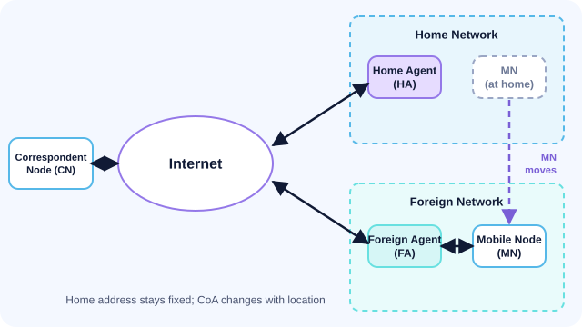

Team Member Name 1
Reg. No. XXXXXXXXXX
Objective: Seamless Mobility & Packet Tunneling in Mobile IP
This project aims to demonstrate the fundamental concepts of Mobile IP, specifically the roles of the Home Agent (HA) and Foreign Agent (FA) in enabling seamless mobility across IP networks. It illustrates how packets are encapsulated at the Home Agent and tunneled through the network to reach a Mobile Node located in a foreign network. The project also demonstrates the decapsulation process at the Foreign Agent, which recovers the original IP packet and delivers it to the Mobile Node. Through an interactive simulation, students can observe the complete packet delivery process — from the Correspondent Node through the tunnel to the final destination.
Mobile IP is an Internet standard (RFC 5944) that lets a device keep one permanent IP address — its home address — while it moves from one network to another.
Normal IP routing sends packets by network prefix. A device that moves to a new network would need a new address, and every open connection would break. Mobile IP adds mobility support so the device stays reachable at all times.
This project demonstrates the problem and its solution. The Home Agent receives packets meant for the away device, wraps them in a new IP header and sends them through a tunnel to the Foreign Agent. The Foreign Agent unwraps them and delivers them to the Mobile Node.

Replace the placeholder details below with your actual names and registration numbers.
Team Member Name 1
Reg. No. XXXXXXXXXX
Team Member Name 2
Reg. No. XXXXXXXXXX
Team Member Name 3
Reg. No. XXXXXXXXXX
Team Member Name 4
Reg. No. XXXXXXXXXX
Team Member Name 5
Reg. No. XXXXXXXXXX
Team Member Name 6
Reg. No. XXXXXXXXXX